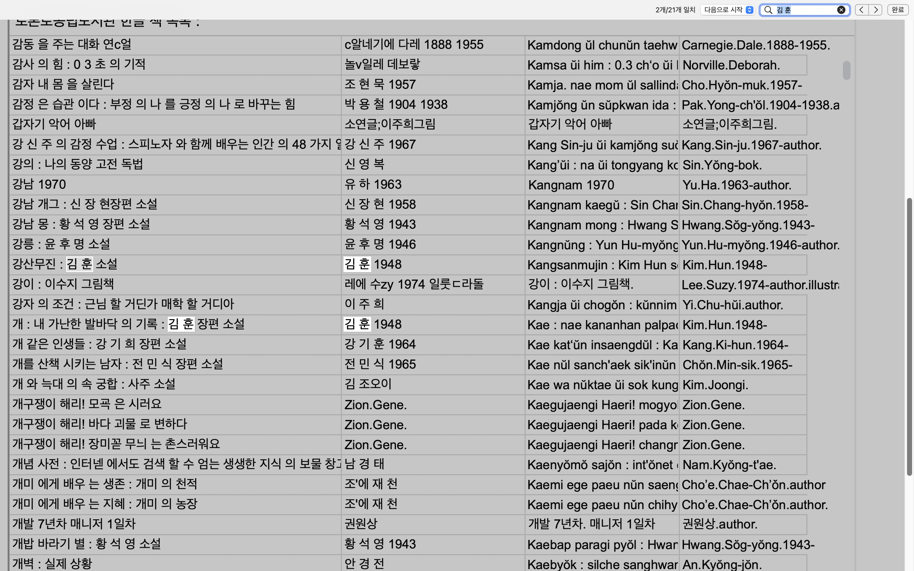

토론토 공립 도서관에는 약 5천여권의 한국어 책이 있습니다.
그러나 한국어 발음 소리에 따라 영문으로 변환되어 있어서
찾고자 하는 책을 쉽게 찾을 수가 없습니다.
예를 들어 "0.1 그램 의 희망"이라는 책은
"0.1 gŭraem ŭi hŭimang"으로 표기되어 있는 식입니다.
이것은 해외 도서관에서 한글로 도서 정보를 타이핑 할 수 없고
한글로 된 도서를 알아볼 수 없기 떄문에
정해진 규칙에 따라 한글을 소리나는 대로 옮겨 적었기 때문입니다.
저는 컴퓨터 프로그래밍을 통해 변환된 제목을
다시 한국어로 바꾸는 프로그램을 고안했습니다.
아직 부족한 점이 많지만
필요하신 분이 많을 것이라 생각해 일찍 공개합니다.
사용방법을 잘 읽어주시고
궁금한 점이나 개선 사항이 있다면
댓글로 문의를 주시기 바랍니다.
감사합니다.
1. 검색이나 목록보기를 통해 책을 찾는다.
2. 찾고자 하는 책의 영문화된 제목을 복사한다.
3. 토론토공립도서관 홈페이지에 가서 복사한 제목을 붙여넣고 검색한다.
1.검색하기

2.제목 복사하기
3.토론토 공립 홈페이지에 붙여넣고 검색하기
4.검색 결과
5.상호대차(place hold)해서 집 근처 도서관에서 빌려보기